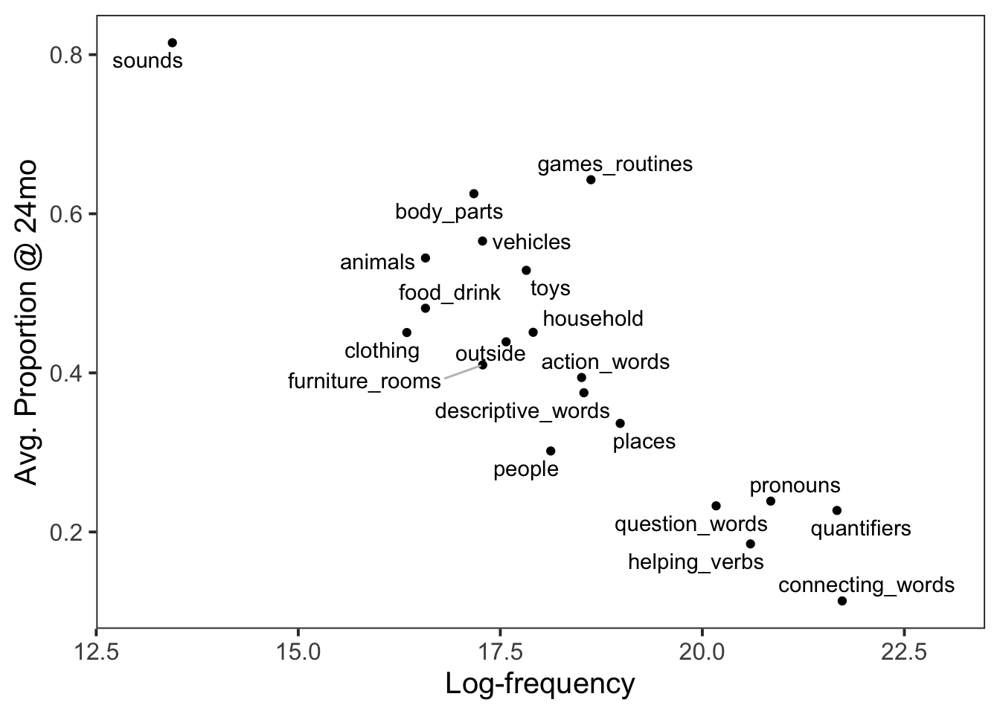

Young children are prodigious learners, especially when it comes to learning language. Children generally start producing simple one-word utterances around 12 months of age and their phonological processing (the processing of what words sound like) is quite mature by 18 months of age. Then, through the next few years of life to age five children learn an average of 6-7 words per day!
Of course, children don’t learn their vocabulary at random, by reading through the dictionary, or even primarily through formal education. Children learn words based on their day-to-day experiences and interactions. So what determines which words children learn and when?
LEARNING OBJECTIVES
Go to the course Posit Cloud Workspace and locate the folder for the lab assignment, which should be named Assignments: Module 7.
First, open the R Markdown document mod-07-lab.Rmd and Knit it.
Make sure it compiles without errors and you can preview the output within the Viewer Pane.
The output should also be automatically saved as an .html file with the same name.
Before we introduce the data, let’s warm up with a simple exercise.
Load any packages you need here. If you find you need another as you work through the lab, add it here and re-run the chunk.
The data for this lab is contained in a file called wordbank-item-freq.csv. Let’s read that CSV into a dataframe named wordbank and take a glimpse at it:
## Rows: 609
## Columns: 22
## $ downloaded <date> 2022-09-22, 2022-09-22, 2022-09-22, 2022-09-22, 2022-…
## $ item_id <dbl> 4, 5, 6, 7, 9, 10, 13, 14, 15, 16, 17, 18, 19, 20, 21,…
## $ item_definition <chr> "grrr", "meow", "moo", "ouch", "uh oh", "vroom", "alli…
## $ category <chr> "sounds", "sounds", "sounds", "sounds", "sounds", "sou…
## $ `16` <dbl> 0.48, 0.41, 0.50, 0.34, 0.71, 0.38, 0.02, 0.03, 0.04, …
## $ `17` <dbl> 0.49, 0.48, 0.52, 0.41, 0.68, 0.40, 0.04, 0.07, 0.06, …
## $ `18` <dbl> 0.55, 0.56, 0.62, 0.51, 0.78, 0.51, 0.06, 0.11, 0.10, …
## $ `19` <dbl> 0.64, 0.68, 0.75, 0.61, 0.87, 0.57, 0.13, 0.20, 0.18, …
## $ `20` <dbl> 0.65, 0.71, 0.76, 0.64, 0.87, 0.57, 0.14, 0.21, 0.21, …
## $ `21` <dbl> 0.67, 0.78, 0.78, 0.67, 0.89, 0.61, 0.19, 0.28, 0.23, …
## $ `22` <dbl> 0.65, 0.77, 0.79, 0.70, 0.88, 0.60, 0.22, 0.33, 0.26, …
## $ `23` <dbl> 0.74, 0.81, 0.85, 0.77, 0.88, 0.69, 0.30, 0.44, 0.37, …
## $ `24` <dbl> 0.77, 0.86, 0.88, 0.78, 0.90, 0.70, 0.40, 0.50, 0.43, …
## $ `25` <dbl> 0.78, 0.89, 0.88, 0.86, 0.93, 0.75, 0.47, 0.56, 0.49, …
## $ `26` <dbl> 0.76, 0.88, 0.88, 0.82, 0.90, 0.71, 0.50, 0.58, 0.51, …
## $ `27` <dbl> 0.80, 0.92, 0.92, 0.83, 0.93, 0.70, 0.52, 0.61, 0.54, …
## $ `28` <dbl> 0.90, 0.96, 0.95, 0.93, 0.97, 0.86, 0.74, 0.78, 0.74, …
## $ `29` <dbl> 0.79, 0.91, 0.92, 0.86, 0.91, 0.72, 0.66, 0.71, 0.63, …
## $ `30` <dbl> 0.82, 0.93, 0.93, 0.88, 0.89, 0.74, 0.70, 0.73, 0.66, …
## $ word <chr> "grrr", "meow", "moo", "ouch", "uhoh", "vroom", "allig…
## $ freq <dbl> 276325, 810281, 1631972, 1174728, 27389, 209222, 14176…
## $ freqrank <dbl> 0.8327283, 0.9108456, 0.9405968, 0.9281497, 0.3541304,…The data for this lab originally comes from the Wordbank, an open database of children’s vocabulary development run out of Stanford University. The data we’ll be working with is a summary of many parents’ responses on the CDI for their children. The CDI was administered to many different parents/children when those children were at different ages. Based on these many responses, the average proportion of children who produce each word at each age was calculated.
This dataset has a few key variables:
item_definition: The wordcategory: The Wordbank-defined semantic category to which the word belongs16:30: These variables indicate the proportion of children who produce the word at each month from 16 mo (16) to 30 mo (30). For example, at 16 months, almost half (0.48–48%) of children can say “grrr”.freq: The number of times the word appears in Google’s Trillion Word Corpus.If you would like to explore more of the Wordbank data, you can do so with the wordbankr package. Also note: the words and word-frequencies were somewhat lazily joined—so don’t use this data directly for any real research purposes without looking things over more carefully.
Take turns answering the exercises.
You don’t have to switch at each exercise, you can find your a cadence that works for your team and stick to it.
Let’s begin with some quick exploratory analyses to get you navigating around and familiar with this data.
# Need to watch videos and read material to see if there is a suggested way of doing this in there. Add answers here.Let’s plot the trajectory of children’s word learning across time for some different words. For the “sounds” category, plot the trajectory of children’s learning from 16 to 30 mos, with the proportion of children producing the word on the y-axis and age on the x-axis. Think about what kind of geom_ makes the most sense for this, and use color to differentiate the words. From your plot, which word do children tend to know best? Which word is learned the fastest from 16 to 25 months? Just for fun, speculate a bit as to why that word might be learned so quickly in that time period.
Now let’s plot the trajectory of children’s word learning across time for some different categories of words. As before, now for the categories in c("sounds", "games_routines", "body_parts", "animals","clothing","people","pronouns","connecting_words","quantifiers","helping_verbs"), proportion of children producing the word on the y-axis and age on the x-axis. Since there are a fair number of categories, you may want to facet and/or use the linetype aesthetic to help you tell the lines apart.
So far we have seen that some words (and word categories) seem easier for children to learn. One reason something might be easier to learn is if it is encountered more frequently. We can learn the streets we drive more frequently, the recipes we cook more often, and so forth. Could it be that children are faster to learn the words that appear more frequently in the English language?
The freq variable measures the frequency of the word in English, as the number of times the word appeared out of a collection of written works collected by Google containing one trillion words (1,024,908,267,229 to be exact).
Quickly list the 10 most frequent words in this dataset, and then the 10 least frequent words.
Make a visualization of the relationship between word frequency and the proportion of children who produce the word at two years of age. Dealing with the frequency of words directly can be a bit wonky, as the distribution of word frequency tends to be very skewed. So transform the frequency into log-frequency before plotting.
To help you visualize, you may also want to add a linear fit to the plot with geom_smooth(method="lm").
Is the relationship positive, negative, or basically non-existent? Is that at all surprising? What might explain it?
Make another visualization of the relationship between the log-frequency of each word and the proportion of children who produce the word at two years of age, but this time facet the plot by word category. Now what do you see?
Can you put into words the set of relationships observed between these two plots?
Do you speak to a toddler the same way you speak to a friend? A professor?
From our analyses, it seems like some word categories are harder for children to learn, in that even though they are common words to which children would be frequently exposed, children still do not learn to produce them themselves until later in development. This might be something about the word categories themselves. For instance, there is evidence that children find it easier to learn nouns than verbs or adjectives (e.g. Gentner, 1982; Markman & Hutchinson, 1984).
However, the explanation might also be something about child-directed speech. The word-frequency data in this dataset came from Google Books data, based on the number of times words appeared in a collection of about 8 million books. How might the words used in books differ from the words heard by toddlers?
For the curious, this paper discusses some more detailed concerns about using these kinds of datasets. And this github repository has some telling discussion of using raw word frequency counts generated from Google N-gram corpora. It can be tempting to treat data as “truth”—but things are rarely so straightforward.
This plot shows the proportion of children producing each word category (averaging over the words in that category) against the average frequency of those words.

The plot above makes the unexpected negative relationship very clear. But as you look at this plot, are there any low frequency word categories children might hear relatively more often than they are written about in books?
What about the high-frequency word categories children struggle to learn like quantifiers and connecting words. What are the most frequent words in those categories? How often do you think children hear those words?
For those interested in language learning, this conference paper measures the frequency of words in child-directed speech by recording and transcribing all of the speech one child heard from birth to three years of age! The study finds somewhat different results than our analysis and is worth reflecting about as you think about the analyses we conducted here.
Now go back through your write up to make sure you’ve answered all questions and all of your R chunks are properly labelled.
SUBMITTING YOUR WORK
Once you decide that you’re done with this lab, change the YAML output from html_output to pdf_output. Now knit the document to produce a final PDF file. Upload the PDF as a Canvas assignment.